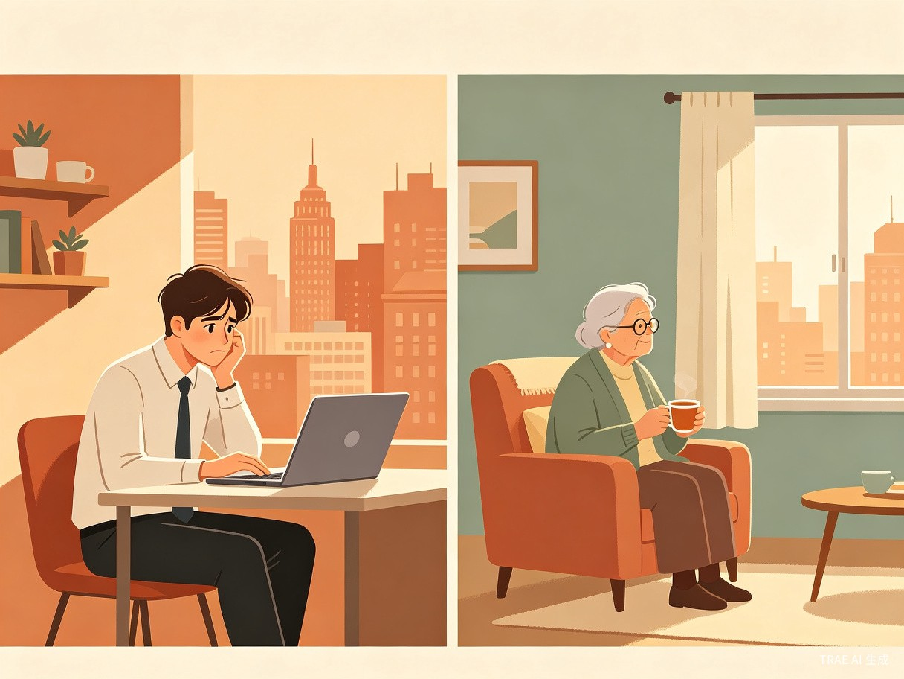
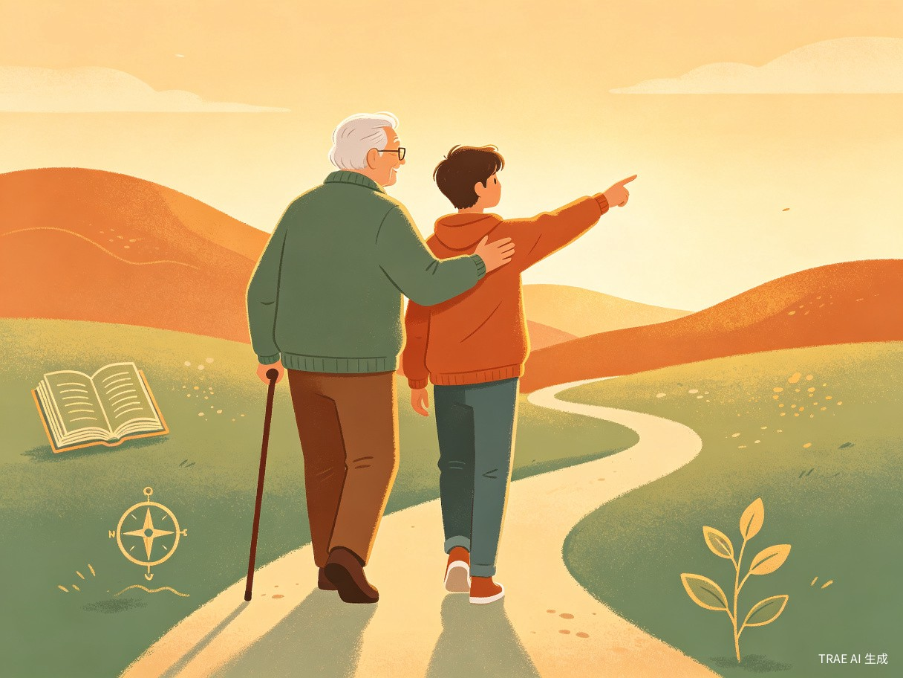

创意介绍
代际桥（GenBridge）是一款双向代际陪伴 App，通过 AI 匹配算法，将有特定困惑的年轻人与拥有对应人生经验的活跃老人配对，建立长期、稳定的一对一视频/语音陪伴关系。
想解决什么问题
老年人拥有数十年积累的人生智慧，却在退休后日益孤独、价值感流失；而异乡打拼的年轻人面对职业、情感、人生方向的困惑，却缺少一个"真正经历过"的引路人。两代人各自孤独，却本可以互相疗愈。
为什么会想到做这个
很多年轻人身处异乡，身边没有祖辈；很多老人子女忙碌、每天只能刷短视频打发时间。这两种孤独并排存在，却从未被连接起来——这让人觉得既浪费，又遗憾。

目标用户与痛点
面向哪些用户
年轻端（25–40 岁）
在外地工作、面临职业迷茫或人生岔路口、渴望深度建议而非泛泛而谈的职场青年。
老年端（60–75 岁）
退休、空巢、身体健康但精神世界逐渐收窄、希望"被需要"的活跃老人。
使用场景
- 年轻人面临跳槽、创业、感情、家庭压力时，想听一个"过来人"聊聊他们当年怎么走过来的。
- 老人每周固定时间和一个感兴趣的年轻人通话，分享自己的故事与经验。
当前痛点
没有这个产品，年轻人只能在网络上找碎片化建议，缺乏连续、有温度的个人引导；老人则要么反复看同类短视频，要么在社区里重复相同的对话，真正的人生智慧无处安放、无人倾听。
产品方案
代际桥的核心产品逻辑围绕"精准匹配 — 深度连接 — 持续陪伴"三个环节展开。
flowchart LR
A[用户注册
填写人生标签] --> B[AI 匹配引擎
经验-需求对齐]
B --> C[破冰对话
系统引导]
C --> D[长期一对一
视频/语音陪伴]
D --> E[关系沉淀
故事存档]
核心功能模块
AI 人生匹配
基于人生经历标签（职业、家庭、挫折、转折）与当前困惑标签，计算"经验-需求"匹配度，推荐最合适的陪伴对象。
结构化破冰
首次对话由系统提供主题卡片（"你做过最大胆的决定""如果重来一次你会怎么选"），降低陌生感。
长期关系档案
记录每次对话主题与收获，生成"人生智慧手账"，让陪伴关系有迹可循、有沉淀。
安全与信任机制
双向实名认证、对话内容加密、敏感词过滤、一键举报与人工复核，保障双方安全。
价值与意义
社会价值
让两代人的孤独形成互补，而非各自消耗。老人的隐性知识——那些只能靠"活过"才能懂的东西——不再随着岁月悄悄消逝，而是真实地传递给下一代。这是任何搜索引擎和 AI 都无法替代的"活的经验"。

"一个社会的温度，不在于它有多少高楼，而在于年轻人是否还能听到老人的故事，老人是否还觉得自己被需要。"
商业价值
采用年轻端订阅付费（每月小额会员费）+ 政府/公益机构合作（补贴老年端接入）的双轨模式，兼顾可持续盈利与社会影响力，也具备与养老机构、企业员工关怀项目合作的 B 端想象空间。
发展路线图
| 阶段 | 时间 | 目标 | 关键指标 |
|---|---|---|---|
| 验证期 | 0–6 个月 | 完成 MVP，验证匹配算法与陪伴体验 | 100 对稳定陪伴关系，NPS ≥ 50 |
| 增长期 | 6–18 个月 | 扩大用户规模，完善付费与补贴机制 | 10,000+ 活跃用户，月留存率 ≥ 40% |
| 生态期 | 18–36 个月 | 拓展 B 端合作，建立品牌信任 | 50+ 企业/机构合作，实现盈亏平衡 |
结语
代际桥不仅是一款产品，更是一种社会关系的重新设计。它相信：每一代人都不是孤岛，老人的智慧值得被倾听，年轻人的困惑值得被认真对待。当一座桥连接起两端，孤独便不再是终点，而是相遇的开始。